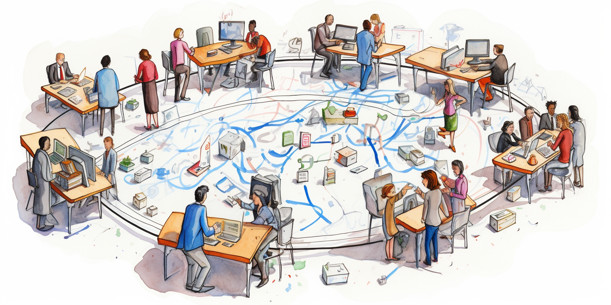
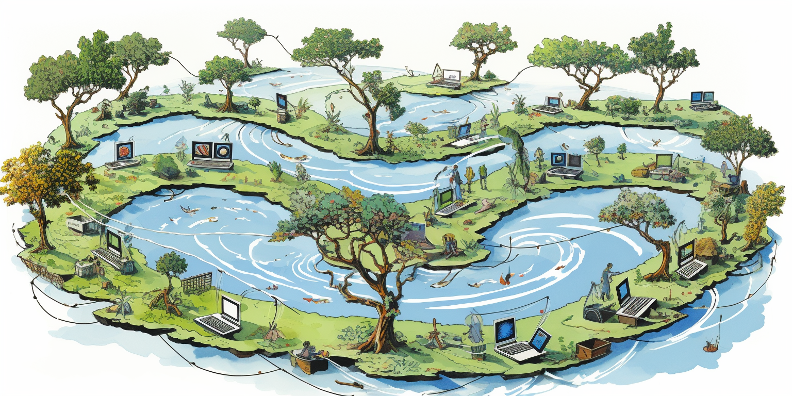

ThreeFold Cloud

The digital landscape is ready for a transformative cloud solution...
Main Sections
Introduction
Presently, dominant cloud platforms like Google, Amazon, and Microsoft are centralized. Yet, a significant portion of the global population remains underserved, lacking robust internet access as well as proximate data and computing resources.
Enter ThreeFold.
Over the past five years, we've been pioneering technology that facilitates the global distribution of compute, storage, and network capacity. While our current reach might not rival giants like Google, the potential of our approach is groundbreaking. The ThreeFold Grid, our foundational infrastructure, operates on principles distinct from conventional cloud giants.
The uniqueness of the ThreeFold Grid lies in its decentralized ownership. Numerous individuals and companies worldwide contribute hardware to the collective, enhancing global access to storage, compute, and network resources. These contributors, known as ThreeFold farmers, receive ThreeFold Tokens as rewards for both providing this capacity and also earn additional rewards when the capacity is utilized.
Based in Dubai, ThreeFold Cloud is now delivering services on top of this grid. Yet, it ensures that every user retains complete control and access to their deployed workloads.
Read this documentation to learn more about ThreeFold Cloud.
ThreeFold DMCC: The Driving Force Behind ThreeFold Cloud
ThreeFold Cloud operates under the umbrella of ThreeFold DMCC, a company based in one of the best regulated economic free zones in Dubai. This strategic positioning allows us to tap into the dynamic and innovative environment of the region, fostering growth and expansion of the ThreeFold Grid.
ThreeFold DMCC is not just our corporate identity: it's the hub from which we manage and operate essential community tools. This includes platforms like our dedicated forum, where users, developers, and enthusiasts can engage in meaningful discussions, share insights, and collaborate on projects. Additionally, our websites, which serve as the primary interface for our audience to learn about and interact with our offerings, are also managed from this central point.
ThreeFold DMCC is the organizational backbone, ensuring smooth operations, community engagement, and the continuous scaling of the ThreeFold Grid.
ThreeFold Cloud's Expansion and Fundraising Initiative
Recognizing the need to enhance our capabilities and streamline the rollout of new services, our immediate focus is on expanding our team. By bolstering our human resources, we aim to ensure efficient development, deployment, and support for our upcoming offerings.
To facilitate this growth, we are currently in the midst of a fundraising campaign. Our projections are optimistic, and we anticipate securing the necessary funds within the next three months. Once achieved, these funds will be instrumental in launching the new services that our team is diligently working on.
Furthermore, this expansion is not just about introducing new services. It also encompasses a strategic upgrade to the ThreeFold Grid. This upgrade is particularly significant for our community of farmers. We're transitioning to a revamped tokenomics model, designed to address and rectify challenges faced with the existing model.
In essence, this period marks a transformative phase for ThreeFold Cloud. With a combination of fundraising, team expansion, and system upgrades, we're setting the stage for a more robust, efficient, and rewarding cloud ecosystem for all our stakeholders.
TFGrid Getting Ready to Move Out of the House
TFGrid is an opensource infrastructure platform and TFCloud is a proud promotor and contributor.
TFCloud is committed to help mature TFGrid 4.x and as such allow TFGrid to become completely independent of TFCloud and TFTech. We expect this might happen mid to end of 2024 and will depend a lot on the collaboration of the community.
This means the following:
- Everything works P2P (peer2peer)
- An independent network of multiple guardian circles takes over the management
- Voting is used to decide on all relevant topics
- All code is verified by the community, independent of TFCloud and/or TFTech
Basically, the ThreeFold Grid, once a baby, is becoming an adult and is ready to move out of the house.
Products
Table of Contents
Planned Products
Table of Contents
Q1 2024
- Mycelium - Become a Publisher on our New Internet:
- Remember the early days of the internet ...
- Read about Mycelium
- BTC Lightning Nodes
- Allowing users to engage in faster, more scalable Bitcoin transactions. This is crucial as the demand for efficient Bitcoin transactions grows. By utilizing the Lightning Network, users can benefit from reduced fees and near-instant transfers, making microtransactions and everyday Bitcoin usage more feasible.
- 3Bot - Your Digital Assistant:
- important: is for the early adoptor, and technical IT knowledge will be required
- 3Bot is designed to be your digital right hand. It can manage a range of tasks, from sending emails and overseeing your calendar to handling chats and financial transactions
- With 3Bot, deploying solutions on the cloud becomes a breeze. Whether it's setting up a new website or launching a specific application, 3Bot streamlines the process, ensuring efficiency and reliability.
- Learn how to develop using a 3Bot to create your own solutions running on the TFGrid.
Q2 2024
- Virtual Datacenters
- Are the more advanced workloads allowing people to deploy any IT workload on the grid using state of the art self-healing management techniques.
- Is using the 3Bot underneith
- Artificial Intelligence (AI):
- The current AI ecosystem is predominantly controlled by a select few. ThreeFold Cloud challenges this status quo by enabling users to swiftly deploy their own AI models.
- With ThreeFold Cloud, not only can you own your AI model, but you can also ensure it remains unbiased. Collaborate with peers, friends, or colleagues to create and control AI solutions that truly serve your needs without external influences.
- Private Blockchains:
- Recognizing the growing importance of decentralized ledger technologies, ThreeFold Cloud provides the tools to quickly deploy many types of blockchain as co-owned by your own community in all safety.
Features
Table of Contents
User-Friendly Design
ThreeFold Cloud is not just for tech-savvy individuals or expert system administrators. It's designed to be accessible and user-friendly, ensuring a broad range of IT users (people who administer applications in the cloud) can operate it with ease.
We leapfrog the current state of the cloud, we emphasize simplicity of operation and avoid complicated user interfaces.
Interfaces
- Chat Interface:
- The primary mode of interaction for most users will be the chat interface. This allows users to communicate with their 3Bot using conversational language. The system will be multilingual, accommodating users from various linguistic backgrounds.
- 3Script - The Cloud Language:
- Beyond conventional languages, ThreeFold Cloud introduces 3Script, a high-level cloud language. It's designed to be straightforward, with basic constructs that simplify the process of setting up and managing your cloud resources.
- Voice:
- The system will even understand your voice.
- Your personal AI system translates your voice to 3script and makes sure you have the best of both worlds, convenience of using your own spoken language and auditability of 3script.
- API:
- For those looking to delve deeper and develop on the ThreeFold Cloud, there's an Application Programming Interface (API) available.
Autonomous Workloads
The standout feature of ThreeFold Cloud is its emphasis on autonomous workloads. But what does that mean? Essentially, these are applications or software that operate on your behalf in the cloud.
Examples range from basic websites to more complex systems like mail servers, CRM systems, or AI-driven platforms. These applications function in a self-driving or autonomous mode, reducing the need for constant manual oversight.
Read the section Autonomous IT
Personal AI-Cloud Workload Example
Within the ThreeFold Cloud ecosystem, a workload represents a specific set of tasks or operations that the system is designed to handle. One such example is the AICloud.
The AICloud is a testament to ThreeFold Cloud's commitment to developing autonomous solutions. Instead of users having to delve into intricate details, specifying requirements like the exact virtual machine configurations, the platform simplifies the process. Users can express their needs in more intuitive terms. For instance, someone might say, "I want an AI cloud equipped with the best chat interface."
The AICloud is designed to be user-centric and adaptive. If a user provides a link containing specific information, the AICloud can ingest this data. This allows for the creation of a personalized chatbot, potentially powered by advanced models like GPT but private, trained specifically on the user's data. The result is a tailored AI chat solution, unique to each user's requirements.
Such capabilities are not just theoretical; they are very much achievable. ThreeFold Cloud is actively working on making them accessible to users, emphasizing ease of use and customization.
Values
Table of Contents
ThreeFold Cloud: A Beacon for Ethical Digital Operations
ThreeFold Cloud is not just another cloud platform; it's a vision for a digital realm that champions ethical, responsible, and community-driven operations. Our mission is to make ThreeFold Cloud the go-to platform for conscientious individuals and organizations, ensuring it remains a space free from malicious intent.
Guarding Against Criminals
We are deeply committed to maintaining the integrity of the ThreeFold Cloud. Recognizing the potential risks of the digital age, we are implementing robust governance mechanisms to deter and prevent criminal activities. Our aim is to ensure that the cloud remains a safe, secure, and trustworthy environment for all its users.
Decentralization at its Core
Centralized systems often become breeding grounds for power imbalances and potential misuse. To counteract this, ThreeFold Cloud is designed with decentralization as a foundational principle. This approach not only enhances security and resilience but also ensures that power and control are equitably distributed among its community.
Empowering Open-Source Development
Understanding the transformative potential of open-source projects, we've established a treasury, enriched with ThreeFold tokens and other digital currencies. This treasury is not just a financial reserve; it's a testament to our commitment to fostering innovation. Developers and innovators who share our vision and wish to contribute to the ThreeFold Cloud ecosystem can be rewarded from this treasury. Whether it's by building new solutions, enhancing existing ones, or assisting ThreeFold Cloud customers, we aim to incentivize and support community-driven development.
Conclusion
In essence, ThreeFold Cloud is more than a technological platform; it's a movement. A movement towards a digital future where ethics, community, and innovation coalesce to create a cloud that truly serves the greater good.
Autonomous IT
Table of Contents
The Cloud Lifecycle
ThreeFold Cloud is revolutionizing the way we perceive and interact with cloud services.
Here's how it works:
ThreeFold Cloud introduces a groundbreaking approach to autonomous cloud management, underpinned by three core concepts that ensure seamless operation and user control. The 3 core concepts:
1. Objective
Definition:
- The user defines their desired cloud configuration, also known as the 'wished state' or 'objective'.
- Example: a user is specifying the need for a virtual data center with three virtual machines located in specific European countries, connected through a private network, and associated with a particular domain name.
- The objective can also be specified by the 3script, which is easy to embed into the wiki system and it's easy to interpret by the personal AI system
Visualization:
- This wished state can be visualized as a sort of wiki system (looks like an searchable ebook with nice graphics), allowing users to easily comprehend their specified objectives.
2. Reality State
Function: The 3Bot constantly assesses the current state of the cloud resources, termed the 'reality state'. It evaluates the existing setup, such as the presence of a virtual data center or the uptime of services, and contrasts this with the user's wished state. This may often result in change requests.
Then querying of the reality state is also done through 3script and allows full auditing and logging of requested information and its result. 3script is human readable and easy to understand by AI systems.
3. Change Request
Change Request Creation: If discrepancies arise between the wished and reality states, the 3Bot calculates these differences and formulates a 'change request'.
Outcome of Comparison: The change request is the result of comparing the reality state with the wished state. It comprises explicit actions, like creating or deleting a virtual machine or connecting to a network bridge.
The change requests are also logged in 3script, this leads to full auditability.
The change request can even be submitted to a DAO or another consensus driven decision mechanism prior to implementation.
The 3Bot will continuously check objective vs reality state and create change requests, which can be automatically executed or checked by humans.
3Bot Execution
The 3Bot, equipped to integrate with both Web2 and Web3, carries out these actions, aligning the reality with the wished state. It continually compares the two states, and if any variance is detected, such as a website being down, the 3Bot diagnoses the issue, formulates corrective actions, and generates new change requests.
Automated Corrections: This system ensures that any disruptions or deviations are promptly addressed. For instance, if a website goes offline, the 3Bot identifies the cause, be it a malfunctioning virtual machine or another issue, and takes corrective measures.
The synergy of these three concepts – the objective, reality state, and change request – grants users unparalleled control over their cloud operations. This dynamic system can adapt to the customers requirements, making it incredibly versatile. Moreover, its compatibility with Web2 and Web3 services amplifies its potential. Users can integrate diverse functionalities, from Bitcoin transactions to email communications or chat solutions, making ThreeFold Cloud a holistic and innovative solution for modern cloud needs.
Open-Source TFGrid

Table of Contents
Open-Source Movement
Table of Contents
Introduction
The open-source ThreeFold Grid is an open-source movement. TFTech and TFCloud are two sponsors of this project.
TFCloud
- The Company who is behind this e-book
- TFCloud is called ThreeFold DMCC and is based in Dubai.
- TFCloud delivers commercial hosting solutions on top of the grid.
- TFCloud products will go life Q1 2024 (beta already in dec 2023)
- TFCloud best effort maintains the threefold forum and delivers best effort support for the TFGrid as well.
- TFCloud is not a crypto company and has no interest to support speculation or any other financial game around the tokens, TFCloud is all about leveraging a distributed network of compute & storage capacity for its own solutions.
TFTech
- develops most of the opensource software as used in the TFGrid
- contributes all this code
- support is best effort
- TFTech sells commercial licenses to help companies, governments and enterprises to make most out of the code.
- TFTech also does OEM deals with partners for specific usecases.
Promise to 100% Independence of TFGrid
- TFCloud and TFGrid are motivated to let the TFGrid infrastructure run independenty from TFTech and TFCloud by mid to end 2024.
- Run Independently means
- less than 20% of the validators or other tech components should be managed by TFTech or TFCloud
- less than 20% of the guardians are linked to TFTech or TFCloud
- guardians will have to decide on upgrades of 3nodes linked to their regional internet
- Anyone community in the world can run their own regional Internet without any help of TFCloud/TFTech.
- This basically means if TFTech and TFCloud would no longer exist and community has interest to keep on funding the project, then the project can continue by itself.
In other words, ThreeFold Grid, once a baby, became an adult and moved out of the house.
TFGrid 4.0

Table of Contents
- Introduction
- Benefits
- Simplicity and Decentralization
- Architecture
- Simplifications
- TFGrid Guardians
- 2 Consensus Mechanisms
Introduction
Over the past few years, we've devoted a significant amount of energy and time to developing the current version of the ThreeFold Grid. We've achieved substantial deployment with an active community.
ThreeFold is working to its version 4.0 which is a super exciting new release we are working on
Benefits
There are clear benefits to the ThreeFold Cloud enterprise.
- unlimited scalable
- regional internet concept (but much more flexible as what was prommised before)
- no longer dependency on TFChain (limits our scalability, billing and capacity tracking will no longer be done on TFChain)
- clear distinction between a money chain (e.g. stellar, ethereum, ...) and our own consensus mechanisms, our aim is to support any other blockchain
- introduction of mycelium, more info.
- net: unlimited scalable p2p planetary network which looks for shortest path and can reroute
- pay: unlimited scalable p2p payment & billing framework
- introduction of 3bot: your digital twin helping you to deploy workloads, manage your farms, ...
Our aim is to have a first version of TFGrid 4.0 available H1 2024 in beta mode. The idea is that the grid can run by itself without TFTech operational support.
Simplicity and Decentralization
At ThreeFold Cloud, we consider that simplicity and decentralization is key to a resilient and efficient cloud and AI platform.
P2P, Distributed and Super Scalable
Threefold Frid 4.0 will be 100% distributed and peer-to-peer.
Architecture

Each participant (user and/or farmer) of the TFGrid will need 3Bot which can be hosted home or on any of the 3Nodes in the TFGrid.
There are 2 blockchains who support the operation, one dealing with all money and identity matters, the others with the DAO’s and validation functionality of the TFGrid.
The 3Bots communicate on behalf of the users with the TFGrid or any of the blockchains.
3Bot for TFGrid Participant Functions
- Your personal bot who helps you to deploy and manage your workloads (solutions) on top of the TFGrid. Your 3bot also helps you to buy and sell your threefold digital currencies.
- AI Chat Bot to deploy solutions and communicate with 3Bot (proof of concept)
- Use artificial intelligence (like chat gpt but private) to talk with your 3bot
- Personal Chat server
- 3Script support, talk to your 3bot, configure and deploy solutions
- Events will show up in your mail or chat client
- Accept payment requests.
- For utilization of the grid, any services of the TFGrid can be automatically be paid for.
- Liquidity Support
- sell buy digital currencies like TFT on your behalf
- Sell/Buy TFT from Ethereum and Stellar
- Integration with Kraken, BTCAlpha … exchanges (v4.1)
- Atomic swaps to sell/buy TFT (v4.1)
3Bot for TFGrid farmer functions
- Your personal bot who helps you to manage your farm and service offerings on top of the TFGrid.
- Farmer bot can do the power management of your farm (power node’s off and on)
- Your Farmer Bot will monitor and collect all relevant information from your 3Nodes
- You can define your own pricing and your own solution offerings on top of the TFGrid.
- You don't have to run your own farmer bot but can be part of a farming cooperative.
Simplifications
Our aim is to simplify our TFGrid 4.0 as much as we can and focus on good documentation for the community to be able to contribute or manage the grid without TF Tech’s involvement.
Some examples of what we can simplify, we can remove billing on the chain and replace it with something else, or remove the generic DAO votes, but have them more specific, but so that it's easier for communities to manage their own internet.
Billing
Billing will not be a native function of tfchain anymore. The idea is that farmers or solution providers can define their own pricing. Maybe there needs to be a minimum price if it's for raw capacity or a maximum. But in general, there will be much more flexibility for the farmer community and the solution providers to define their own pricing, they can build anything on top of the threefold grid. So it's much easier. For them to define the price they want to have for their own efforts. It will be up to the broader community, the users, to define if they want to pay the price as being asked for by the farmer or the solution provider.
TFGrid Guardians
There will be multiple roles into threefold grid 4. 0. One very important role will be given to the Grid Guardians. Grid Guardians are people who need to be willing to spend hours per week in the beginning to deploy and maintain their guardian validators and operate the consensus mechanisms. They will be rewarded as such and become an important cornerstone of our decentralization effort.
A guardian will deploy a guardian validator to be part of a Guardian Circles, there need to be at least nine guardians per regional Internet.
A standard validator has all the functions that you would expect from a blockchain and it will be quite easy for a validator to run these services. But some technical expertise will be required.
A guardian validator is required to keep a grid up and running and safe e.g. the Guardian Validator will check the uptime of the 3Nodes, will do random checks to make sure that the 3Nodes are running our certified validated software, it will do certain other checks to do with billing or capacity checks and also store the results of those checks in a database.
2 Consensus Mechanisms
Guardian Circles.
- 9-99 nodes, each Guardian runs one Guardian Circles Node.
Holding all the logic as needed to manage following functions
- Checking uptime.
- Management of treasury on CHI Chain
- Keeping track of capacity used
- keeping track of capacity deployed
- Providing Proof of Payment (needed for the ZOS nodes to deploy a workload)
- Identity Verification
- Federation with other Guardian Circles (e.g. around identity and reputation)
All data is stored in a replicated database and secured by the Guardian Circle and can be replicated as many times as required by the community.
The Guardian Chain functions can be accessed over Open RPC.
Technology: tendermint successor + VLANG 3Bot runtime
CHI Chain
Each regional Internet can chose to run on existing money blockchain or deploy an own Money chain.
If no CHI Chain deployed then more staking will be required per 3node
Up to 99 nodes. Is a cosmos based delegated staking blockchain. The CHI Chain Validators earn money by deploying and maintaining a node. It's a straightforward deployment process.
The functions of this blockchain
- Digital Currency Functions (CHI and wrapped TFT in treasury).
- Identities and Reputation.
- Integration with other Public Blockchains through IBC protocol (see Cosmos ecosystem)
All Trust

Table of Contents
- A Paradigm of Trust
- Farmers: Investors in Shared Infrastructure
- Grid Services: Facilitating System Usage
- Flexible Pricing Policies
- IOUs Enable Trusted Transactions
- Guardian Circles: Humans Ensuring Oversight
- Summary
A Paradigm of Trust
What if instead of distrusting others, we embrace a paradigm of trust? The ThreeFold Grid 4.0 system is built on this principle of trust between all participants.
The TFGrid 4.0 comprises different actors, each represented by a 3bot digital assistant. 3bots enable automated interactions between farmers, service providers, and consumers.
Farmers: Investors in Shared Infrastructure
- Farmers invest in hardware capacity like 3Nodes or Mycelium-based services (web gateways, 5G, etc). Their investments fund the grid infrastructure.
- Farmers can choose to actively manage their infrastructure using their 3bot. Or they can join a Farming Cooperative to simplify operations.
- Either way, farmers earn profits when people purchase and utilize the infrastructure capacity they invested in. Their 3bots handle billing, monitoring, support issues, etc.
Grid Services: Facilitating System Usage
- Hundreds of different grid services can exist, from storage and compute to telecom and networking.
- These services track usage metrics like bandwidth, storage consumption, RPC requests, etc. Usage data is reported transparently to the relevant farming 3bot.
- Consumers can interact directly with any service via the Mycelium message bus. Services deploy workloads, fulfill requests, provide monitoring, etc as needed.
Flexible Pricing Policies
- Farming 3bots define customized pricing policies for their services based on usage. Costs may vary based on compute time, storage quantities, bandwidth, etc.
- Pricing flexibility creates an open market. Farmers can price based on costs and desired profit margins. Consumers can shop for services based on performance, reliability, location, and price.
IOUs Enable Trusted Transactions
- IOUs (I Owe You) represent agreements between farmers and consumers for grid usage.
- Both parties digitally sign each IOU, ensuring consensus on the transaction details.
- At regular intervals, farmers submit IOUs to the Mycelium Pay Bridge operated by a Guardian Circle. This aggregates IOUs and requests payment from the consumer 3bots.
- Reputations are maintained on the blockchain to identify any bad actors abusing the system. But fundamentally, the system relies on trust between participants.
Guardian Circles: Humans Ensuring Oversight
- We believe a Guardian Circle has the potential to be as good as blockchain and more because Guardian Circles still provide human oversight over key decisions when needed, the bulk of transactions run automated.
- Circles enact decisions when their 9-99 member nodes reach consensus. They manage treasuries, set policies, enable collaboration between regional grids, and more.
- Their flexibility allows customization by each grid community based on local needs.
- Circles leverage tools like multisig wallets, Mycelium consensus, and VLang DSLs to codify logic while retaining human checks and balances.
Summary
In summary, ThreeFold Grid 4.0 demonstrates that with the right incentives and oversight, we can build shared digital ecosystems founded on trust and collaboration.
Decentralization

Table of Contents
Introduction
Decentralization, in our view, isn't solely about employing blockchain technology everywhere. Instead, we envision it as the culmination of a global community collaborating transparently, sharing everything they do, and actively seeking feedback. Our goal is to ensure that the platform we deploy operates in the most distributed and decentralized manner possible.
V3.11
| Description | Good Enough (1) | Remark |
|---|---|---|
| 3Nodes owned and invested by Independent Farmers | Yes | less than 10% owned by ThreeFold Cloud/Dubai |
| open documentation & feedback | Yes | all opensource on github, anyone can contribute and give feedback, whcih does happen quite well |
| transparancy and input on any change to do with tokenomics | Yes | see the discussions on forum (3) and GEP's process |
| transparancy about tokens, history | Yes | see wiki (2) which is also on github, a lot of info |
| TFChain deployment | No | too few run the validator stack, we need more validators |
| Code Development | No | +90% done by TFTech , we need more participants |
| Funding For Tech Creation & TFGrid Promotion | No | +- all done by TFTech and TF Cloud , we need more participants to make this community owned |
| input on testing cycle & collaboration | Yes | We have a testnet on which everyone can contribute |
| quality and transparancy of code | Yes | all is on github (4), everyone can review, comment |
| input on process & roadmap for code development | Yes | all is on github (4), everyone can review, comment |
| tracking of available compute, storage, network capacity | Yes | all is tracked on blockchain TFChain (farming) |
| tracking of used compute, storage, network capacity | Yes | all is tracked on blockchain TFChain (utilization) |
| minting of tokens (farming) | Yes | code uses the information on blockchain and creates minting report |
| verification of minting of tokens (farming) | Yes | minting reports checked by guardians (5) and hash kept on blockchain when doing the minting |
| the actual minting | Yes | multisignature of guardians is needed to valudate the transactions, each minting links back to report |
| its possible for super smart hackers to fake capacity | No | probably yes on non certified nodes, yes but not easy (6) |
| are all components redundant and distributed enough | No | e.g. TF Hub, TF Proxy, do note this does not weaken security, only reliability (7) |
- (1) This is our subjective evaluation and should not be construed as a guarantee or commitment. We welcome any differing opinions or feedback.
- (2) The wiki
- (3) The forum
- (4) Github, list of components see here
- (5) there are 9 Guardians, 6 need to approve (TODO, double check)
- (6) they would have to re-engineer how ZOS works and tells TFChain, but human chain = guardians can still see, we are planning to make this 100x more difficult in V4.0. If a hacker succeeds they would basically receive tokens which are not really earned. This is probably not possible on certified node, because of silicon route of trust with protected bios.
- (7) TF Cloud is operating a kubernetes cluster to run some of these services. In v3.13 we expect more farmers to run this independently
V4.x
With V4.x, we aim at the first 100% independent grid deployment.
mid to end 2024
- Run Independently means
- less than 20% of the validators or other tech components should be managed by TFTech or TFCloud
- less than 20% of the guardians are linked to TFTech or TFCloud
- guardians will have to decide on upgrades of 3nodes linked to their regional internet
- Anyone community in the world can run their own regional Internet without any help of TFCloud/TFTech.
- This basically means if TFTech and TFCloud would no longer exist and community has interest to keep on funding the project, then the project can continue by itself.
Following features make sure the grid can get to full independance.
- peer2peer billing & payment
- peer2peer deployments
- peer2peer farmering cooperative (group farmers to become more effective)
- compatibility with major money blockchains
Guardians
Become a Guardian
The first TFGrid 4.0 regional internet will requires 9 guardians to start with (will be more later).
These Guardians will be the participating members of a Guardian Circle
Requirements
- Good knowledge how to use Linux and Docker to allow you to deploy and upgrade your validator starting from code.
- At least 4h time available per week (will be more at start)
- Willingness to participate in the forum of TF and coordinate with Coders.
- You feel aligned with our values of planet and people first
- Willingness to look at open issues at least 5 times a week (there is chat and email notification) unless during the holiday period.
- Choose a backup which can help you when needed (sick, holidays, …).
- Complete your candidacy on our forum on … Fill in the motivation, your profile, …
- Get at least 3 people from the community to endorse your skills and motivation.
What do you get in return
- Eternal recognition from your Regional Internet community (-:
- TBDk USD per month in CHI reward, this CHI can only be sold through the Liquidity Pool.
TFGrid Tokenomics

TFGrid Tokenomics Upgrade
The tokenomics of any digital ecosystem plays a pivotal role in determining its sustainability, growth, and value proposition. In the case of ThreeFold, there are evident challenges with the current tokenomics model that necessitate an upgrade.
The current tokenomics model of ThreeFold doesn't fully reflect the platform's worth and potential. An upgrade is essential to rectify existing challenges, ensuring that the tokenomics aligns with the platform's growth trajectory and offers a fair representation of its value.
- Lack of Commercial Utilization:
- The present model doesn't sufficiently incentivize commercial utilization. This means that the tokens, instead of being used to facilitate transactions or access services within the ecosystem, are often liquidated.
- Selling Pressure from Farmers:
- The current dynamics have led to a scenario where ThreeFold farmers frequently sell their tokens. This consistent selling exerts downward pressure on the token's price, preventing it from realizing its true potential value.
- Undervalued Market Cap:
- The cumulative effect of these factors has resulted in a market capitalization for the liquid tokens that is significantly undervalued. With a market cap hovering around 5 million dollars, it starkly contrasts with the intrinsic value and potential of the ThreeFold ecosystem.
Future Optimism: Despite the current challenges, there's a strong belief in the imminent positive shift in the token's value. As ThreeFold gears up to launch more commercial workloads and with the anticipated funding for TF Cloud, there's an expectation of increased commercial utilization. This, in turn, can drive demand for the token, potentially boosting its price and aligning the market cap more closely with ThreeFold's true value.
We are working on some fundamental changes which will achieve the following
- TFT farming will slow down and there will probably never be more than 1 billion TFT ever
- Farmers will receive more reward based on Utilization
- Staking is a required for becoming a future Farmer or Farming Cooperative
- P2P Billing and Payments will lead to using TFT for much more services, which will have positive impact as well.
TFGrid 4.0 Roadmap

Introduction
This section covers the TFGrid 4.0 roadmap. Stay tuned for more information on this.
TFGrid 4.0 Roadmap Overview
- No more TFChain
- Many peer-to-peer features
- Features as descrived in v4.0
- Concepts as described in all trust document.
Note: More information will follow
Mycelium

Table of Contents
Mycelium Platform
Table of Contents
- Mycelium: A Platform for Conscious Decentralization
- What is Possible with Mycelium
- Host your website, blog, wiki … 100% decentralized (Dec 2023)
- Reserve your unique name, Manage your Identity and Reputation (Dec 2023)
- Become smarter together (Q1 2024)
- Communicate Globally over Shortest Path Possible in all Privacy (Dec 2023)
- Be your own youtube (Dec 2023)
- Collaborate, manage and share your own website, wiki, files, images, video's (Dec 2023)
- Collaborate with your Circles (Q2 2024)
- Manage and share your own data, manage your own time (Q2 2024)
- For the techies: deploy your own Virtual Datacenter or AI System (Q1 2024)
- For the developers: Create Advanced true P2P Apps with batteries included (Q1 2024)
Mycelium: A Platform for Conscious Decentralization
Mycelium has as purpose to restore the Internet to its original glory, a true Peer2Peer platform capable to expand our collective consciousness. Mycelium allows human networks to flourish without centralized intermediaries.
Mycelium uses the ThreeFold Grid as its base capacity cloud layer (storage, compute, network) which is opensource Internet Infrastructure platform.
Mycelium has no central point of control. Community provided nodes forming the Mycelium network are operated by individuals and communities who share resources and capabilities to manifest a common vision.
Rich capabilities empower users to connect, communicate, transact and collaborate while retaining ownership of their own data and digital identities. Features like self-sovereign identity and encrypted communications enhance privacy and user agency.
Incentive structures reward conscious contributions that regenerate communities and the planet. The Mycelium ecosystem cultivates an ethos of compassion, sustainability and abundance.
With Mycelium, we can rebuild critical systems - from currency to culture - in a more decentralized, conscious manner. Mycelium provides a programmeable, affordable, secure and ultra scalable layer for a digitally-connected society aligned with our highest values.
A worldwide web of compassion is within reach if we take up the challenge.
What is Possible with Mycelium
The first version of Mycelium enables makers and creators to build their own decentralized internet, inviting friends into the new digital worlds they imagine.
Host your website, blog, wiki … 100% decentralized (Dec 2023)
With no single point of failure, your website can scale seamlessly. Reach a vast audience directly, with no intermediaries. Monetizing content is as easy as writing a page. Mycelium makes publishing open, resilient, and profitable - connecting your ideas to your community like never before.
Reserve your unique name, Manage your Identity and Reputation (Dec 2023)
Each website is hosted under a unique name you chose. This name is yours forever, be fast to claim your space on our new Internet. All funds received from paying for name services are used to develop mycelium further by means of a quadratic funding pool (see gitcoin).
Identity and Reputation are maybe your most 2 valuable assets on our new Internet. We take authenticity and reputation very seriously and it forms the base of any other feature.
Become smarter together (Q1 2024)
Feed diverse knowledge into your co-owned AI - from life experiences to company data. Together, become smarter than any centralized system. Pool knowledge within trusted circles to train AIs that understand your needs. Guide them with your values. Mycelium lets communities control their AI destinies, unlocking collective intelligence. Your data stays yours, but knowledge is created together in all authenticity.
Communicate Globally over Shortest Path Possible in all Privacy (Dec 2023)
Any device, service or person gets connected over our mycelium network, the shortest path will always be chosen, all traffic is end2end encrypted and cannot be intercepted. If a network connection goes down you are automatically re-routed over networks of your community. You receive rewards for being a provider of network capacity.
You can send files or messages to any of your friends or business partners, the messages will be delivered ultra reliable using the shortest path. You can never lose any drop of communication nor be intercepted.
Be your own youtube (Dec 2023)
You want to share a lot of video or audio content, you don’t like to be a product of youtube, why not be your own youtube. Our youtube has built in content delivery capabilities with caching (you can reach millions of users). You can also monetize your content using Fungi Pay.
We pre-populate this video peer2peer network with 3000 well chosen educational videos (see Sikana) which can now be watched for the next 4 billion times but now faster and fully decentralized.
Collaborate, manage and share your own website, wiki, files, images, video's (Dec 2023)
- Manage you files, share with who you want.
- Collaborate on your wiki, website, code, ...
- Colaborate on documents (office docs).
Collaborate with your Circles (Q2 2024)
Mycelium Circles provide the infrastructure to mobilize collective intelligence for the greater good.
With Mycelium, users can self-organize into groups called Circles. You bring together whoever you need to achieve a shared purpose. Circles allow fluid, peer-to-peer teamwork aligned with your values.
Circles provide versatile features to align efforts and accelerate results. Define milestones, allocate resources, implement Agile workflows, and track progress in integrated systems. Shared ownership of goals and outcomes fosters co-creation.
For initiatives needing funding, Circles can hold a collective treasury with clear rules for utilization. This enables grassroots initiatives while limiting centralized control of assets.
Circles also facilitate society-wide cooperation across organizations. With bridges between Circles, aligned groups can come together in common cause - from regenerating ecosystems to providing universal healthcare.
Manage and share your own data, manage your own time (Q2 2024)
Manage your contacts, agenda, … Share your data with who you want. Allow app developers to connect to you and fetch your information but on your terms.
Your data can never be lost nor corrupted.
For the techies: deploy your own Virtual Datacenter or AI System (Q1 2024)
Techies can deploy Linux or AI apps in the Mycelium Cloud, while still connecting to the traditional internet. This allows building next-generation solutions leveraging all Mycelium's benefits but being compatible with the current web2 and web3 world.
For the developers: Create Advanced true P2P Apps with batteries included (Q1 2024)
Developers can build purpose-driven applications on top of Mycelium's decentralized infrastructure. Leveraging components like the reliable message bus, distributed storage, vector db, and AI workers
You can even leverate Fungi Pay and Bridges to the existing banking system.
Mycelium Roadmap
Table of Contents
- v0.5 = minimal viable product for the beta tester early adopter
- v0.6 = Search + AI + BTC Lightening (Q1/Q2 2024)
- v0.7 = Virtual Datacenter (end Q1 2024)
- v0.8 = Developers for Digital Twin Experiences (end Q2 2024)
- V1.0 = more user friendly interaction (TBD)
- V1.1 = metaverse extensions (TBD)
v0.5 = minimal viable product for the beta tester early adopter
End Q4 2023 a first version will be available to our early adoptors.
- Tools
- Plugin for Browser (chrome)
- App for OSX, Windows & Linux
- App for mobile (Android and IPhone)
- Peer2Peer networking
- shortest path
- end2end encryption
- reliable, find new routes if one is broken
- find most efficient path
- Name & Identity Management
- manage your identity (email, address, tel, ...)
- manage who has access to parts of your identity (can control who can see what)
- single sign on on any of the mycelium services, websites
- no need to remember lots of passwords
- manage your names on Mycelium, link them to services
- signing of PDF
- signing of 3script (how to collaborate, get to consensus)
- P2P Chat & Video Conference
- compatible with elements, matrix chat, ...
- integrated with our Identity Management & Peer2Peer Networking
- P2P YouTube Alternative
- host your video content, with no tracking
- integrate in any website
- automatic contend delivery (make sure your audience has best possible experience)
- Website/Wiki/... Publishing
- alternative to Medium, Wordpress, basecamp ...
- rich set of components (widgets), beautiful layout
- strong authentication
- see who looked at which part of your website (tracking, stats)
- comments feature (let feedback on any website page)
- if too technical, the ThreeFold Cloud team can setup for you and port your existing content
- File Management + Online Office
- Manage your Files, share with your friends of colleages
- Collaborate on Office Docs
- Collaboration
- on Website,Wiki, ...
- automated deployment after edits
v0.6 = Search + AI + BTC Lightening (Q1/Q2 2024)
- First version with Search & AI
- Integration with BTC Lightening Payments
- Grow our community of farmers (tools, promotion, ...)
v0.7 = Virtual Datacenter (end Q1 2024)
- Allow technical users to deploy any linux based application inside a virtual datacenter
v0.8 = Developers for Digital Twin Experiences (end Q2 2024)
- Develop on top of 3Bot (your digital twin), create your own super app
- This version will be for early adopter developers
- Your full digital life can be programmed & automated (contacts, agenda, ...).
V1.0 = more user friendly interaction (TBD)
- Super power full conversational UI for our digital life
- Nice web UI (or native for mobile)
- Much more powerful AI features
- First version of ourphone
V1.1 = metaverse extensions (TBD)
- Metaverse (augmented reality, …)
Our Technical Platform

Table of Contents
- Mycelium Network Agent
- Mycelium Cloud
- Mycelium AI
- Mycelium Search
- Mycelium Circles
- Fungi Stor
- Fungi Pay
- Fungi Bridge
- MyTwin (Mycelium or My Twin)
- VLang
- 3Node
- OurPhone
Mycelium Network Agent
A smart agent which runs on mobile phones, desktop and servers. All agents together create the Mycelium Network which might be the most reliable and secure internet network ever created.
The Network agent also provides other network services like name services, p2p database, reputation mgmt, micro payments, reliable message bus, …
All network traffic is end2end encrypted and can survive internet network outages. Hackers cannot intercept traffic or modify any information. The shortest path is always chosen between 2 participants in a communication flow (not based on algorithmic properties but based on latency and quality of network).
Mycelium Cloud
Another name for our newest generation of the ThreeFold Cloud, the ability to host any linux, blockchain or AI workload on a global scale as long as we have enough motivated farmers to provide capacity. Farmers get rewarded for providing network, compute and storage capacity.
Mycelium AI
A network of GPU’s which can be used by developers in the most flexible way using micropayments, avoiding large capex requirements. Our Aim is to enable the largest AI Network in the world for emerging countries. Micropayments are used to reward the providers of the GPU’s as well as Vector DB’s.
Mycelium Search
AI based search, accessible by all participants and hosted by all participants in such a way we can index our new Internet. Is using opensource AI Models and large distributed vector databases.
Mycelium Circles
Collaboration tool written in Vlang, output is a nicely formatted ebook which dynamically gets regenerated depending on business model, crm data, cash flow, milestones, necessary requirements, tasks, …
This is a revolutionary tool to be the base for our future collaboration.
Fungi Stor
Different storage and database tools are required for any app to come alive,
- Fungi VECTOR: needed for AI Applications
- Fungi STOR (Storage)
- Fungi STREAM (video, audio)
- Fungi FS (FileSystem) (Q2 2024)
- Fungi SQL (H2 2024)
All of these storage applications work in full decentralized peer2peer way on top of the Mycelium Cloud and Network.
Fungi Pay
None of the above can be done without a micropayment solution.
Fungi Pay allows consumers of any network, compute, storage or any other cloud service to pay super small fees without latency and complications. Fungi Pay is based on IOU’s
These IOU’s are called Spores or in short SPRS , 1 SPR is a unit of exchange of value. You can exchange anything for anything else everywhere.
Fungi Bridge
IOU’s need to be rolled up and be transformed to money transactions on blockchain or classic banking systems. Fungi Bridge takes care of this function and works from out of a sovereign digital freezone.
MyTwin (Mycelium or My Twin)
Each Person owns a MyTwin, which is your avatar acting on your behalf on the Mycelium Network. Your MyTwin (MT) is the only digital creator who has the capability to reconstruct and manage your private data.
VLang
Our own fast compiled safe development language.
3Node
ThreeFold Nodes also called 3Nodes are perfect hosts for the Mycelium Ecosystem, each of the above components can be hosted on 3Nodes.
In v4 of ThreeFold, farmers receive SPRS in exchange to TFT by means of a Fungi Bridge.
OurPhone
Eventually we need our own phone, fully integrated and ready to go to unlock this ecosystem.
Mycelium FAQ
Table of Contents
- What is the link with ThreeFold.
- Is this a blockchain or crypto project
- Is this realistic?
- When will we have it?
- How does Mycelium compare to?
What is the link with ThreeFold.
Mycelum is a platform connecting people and is using the TFGrid as its capacity layer (Distributed Cloud). Mycelium will have a dedicated website and dedicated team within ThreeFold Cloud or maybe later as separate company underneith the venture creator.
Is this a blockchain or crypto project
NO, we are compatible with many blockchains but we don’t rely on them. We believe peer2peer and consensus driven decision systems with bridges to other blockchains are more powerful and way more scalable, secure and efficient.
Is this realistic?
We have been working on this for many many years over different of our own startups. We believe we have the pieces developed and ready to be integrated to a productized solution which can be used by many.
- ThreeFold.IO can be seen as our 3e generation implementation of a peer2peer cloud.
- Mycelium with all its layers is the result of +20 years of experience
- We have working prototypes today of every required component.
We are very proud of our team and grateful for the constant out of box thinking.
When will we have it?
Within 6 months is realistic, we are finalizing our next funding round and then we can go fast.
How does Mycelium compare to?
- Urbit: a truly amazing project, many similar ideals and goals. Urbit requires the developers to learn a lot of new concepts and development language.
- Holochain: a very nice project, focussed on personal data pods as well, with intelligent decentralized peer2peer compute. Longer history than us. Good community.
Maybe rather than compete we can even work together?
Some of the problems we have tackled we have literally been trying to solve now for more than 30 years, we believe we are getting close, let's together try to break it, so we can fix it.
Vision

Table of Contents
Technology

Table of Contents
- Introduction
- Autonomous Safe Cloud and AI Platform
- ThreeFold Mimics Nature
- Unlimited Scalable & Flexible
Introduction
TFCloud is an autonomous and safe cloud platform thanks to its design mimicking nature leading to its unlimited scalability and flexibility.
We present here the ThreeFold Vision in a nutshell.
Autonomous Safe Cloud and AI Platform
Imagine a world where everyone is empowered to deploy any Blockchain, Cloud or AI workloads with self-healing and Autonomous capabilities. This system would dynamically allocate or deallocate CPU’s and GPUs based on computational needs. The Autonomous System would recover from unforeseen scenarios, restoring operational efficiency and adhering to redundancy requirements to ensure continuous and reliable performance.
This entire process runs without compromising security. The system isn't managed by the AI itself, but by separate circuits tied to a collective of human stakeholders (we call this a Human Chain). These stakeholders retain control over the operation at all times. It could be that a consensus among these stakeholders is necessary before executing specific change requests, serving as a measure for enhanced security. This is ensured through the deployment of two independent, unconnected circuits. The first is the AI circuit, essentially your AI application, which can harness thousands of GPUs and process vast amounts of information. Concurrently, there's the Control Circuit, which is governed by Human Chains, keeping human oversight integral to the system's operation.
The AI Circuit doesn't have access to the Control Circuit. Any modification in the Control Circuit requires consensus before implementation, and our foolproof system ensures that all changes are deployed in strict accordance with the intended state (we call this a Tamper Proof deployment). This process guarantees a 100% match between the actual deployment and the originally planned modifications.
The integrity of our Control Circuit is safeguarded from potential threats such as other AI systems, quantum computers, or cyber attackers. This security is due to our adoption of consensus-based principles analogous to those utilized in modern blockchain technologies.
We believe that no other company approaches this level of capability. In our opinion, the creation of a true autonomous AI system is not possible without an operating system such as our Zero-OS.
Above described system is not a dream but is close to being reality in our version 4.0 of our software stack.
ThreeFold Mimics Nature

Today's IT systems are too complicated and layered, causing a whole heap of problems like using too much electricity, making life hard for developers, not using computer resources in the best way, and creating security, privacy, scalability, and performance issues.
But there's good news: ThreeFold is hard at work building an autonomous generic usable IT platform. This platform is designed to offer everything needed to make the back-end of the Internet, AI, and Blockchain work better.
At ThreeFold we like to look at nature and learn from it, this is also called Biomimicry. Biomimicry is a design discipline that seeks to solve human problems by emulating nature's time-tested patterns and strategies. The core idea is that nature, with 3.8 billion years of evolution and adaptation, has already solved many of the problems we are grappling with. Animals, plants, and microbes are the consummate engineers and designers.
3Bots represent humans and work together in consensus to control any IT workload. They utilize the capacity of 3Nodes in such a way to maximize reliability, uptime, security, and privacy. The 3Bots facilitate users' access to the extensive knowledge encapsulated within the AI Cloud. This AI Cloud can be trained with contributions from thousands of individuals. Additionally, developers are relieved of the overwhelming complexity prevalent in today's systems.
The current ThreeFold opensource platform is generation 3 and expanding every day, see https://dashboard.grid.tf/explorer/statistics .
ThreeFold is now ready to deliver customized private versions of this platform for any use case which requires more efficiency, manageability, scalability and security.
Unlimited Scalable & Flexible

Millions of 3Nodes can empower the capacity layer, billions of 3Bots can be the Autonomous Agents managing any of the workloads in the network. Each 3Bot is owned by one person. The 3Bots can operate Autonomous Circles which are driven by Human Chains.
The connection between the 3Bot and the owner is secure and private. All 3Bots are identified through a blockchain and reputation is an important concept to make sure our network is as safe as possible.
AI Clouds are networks of AI capacity owned by Autonomous Circles. We believe in a world where there will not be one huge AI but many AI’s owned by different groups of people.
The 3Bots can operate and communicate with any Web3 based technology. This provides for ultimate flexibility and allows Autonomous Circles or 3Bots to deal with smart contracts and digital currencies.
Benefits
Table of Contents
- Introduction
- Deterministic Deployments
- Private AI
- Edge AI
- Rapid Start
- Tamper Proof
- Quantum Safe Storage
Introduction
The ThreeFold Cloud comes with many benefits for users. We present here the most salliant ones.
Deterministic Deployments
The system is able to build the required software (e.g. AI Application) in a secure and deterministic way. The build systems are run autonomously but still controlled by a Human Chain.
Once consensus achieved, builds verified they will be deployed using our Tamper Proof system which makes sure that the build will always correspond to the reality. No hacker or alternative system will be able to influence how applications get deployed on the AI Grid.
Private AI
The concept of Private AI facilitates safer and more confidential data processing by AI systems. It enables the processing of vast amounts of data in such a manner that human access is either eliminated or, if necessary, granted in a highly controlled way through blockchain mechanisms.
Take the instance of security camera footage processing. The challenge lies in allowing AI to handle all the processing while ensuring that the same information remains inaccessible to hackers or compromised security personnel.
Edge AI
Occasionally, it's more practical to transport the AI application to the data's location instead of vice versa. For instance, consider security cameras and AI image processing. Picture the ability to deploy a new AI application across thousands of cameras simultaneously in just a minute, delivering insights more quickly and securely. New approaches are required to realize this potential.
Rapid Start
Deploy your AI workload much faster without having to copy as much data. Certain AI workloads can be sizable (many Gigabytes), it can take a long time for these workloads to be deployed especially if AI will be used in an Edge AI Context. Systems which otherwise would take 30 min to be deployed we can do in less than 1 minute.
Tamper Proof
Deploy your AI workloads in such a way that no-one can modify the intended result. Even if only as much as 1 bit would be changed between time of build and deployment Zero-OS will refuse to start the application.
Quantum Safe Storage
Our QSS allows data to be stored in such a way that data can never be lost nor corrupted. Not even a quantum computer can get access to the information.
Quantum Safe Storage

The Role of Quantum Safe Storage for AI
Imagine a storage system with the following benefits:
- up to 10x more efficient (power and usage of hardware) for certain workloads
- ultra reliable, data can not be lost
- ultra safe & private
- ultra scalable
- sovereign, data is close to you in the country of your choice
- true peer-to-peer, by everyone for everyone.
- not even a quantum computer can hack the storage
It is not a dream, it does already exist.
Our storage architecture follows a true distributed design. Participating nodes (can be on ultra safe locations) only store small incomplete parts of data (files, photos, movies, databases…) by only offering a slice of their current (local) storage devices. Managing the storage and retrieval of all these ‘distributed fragments’ is done by a software that creates ‘development and/or end-user interfaces’ for this storage algorithm. We call this ‘dispersed storage‘.
The user has complete control over where the data is stored and which level of redundancy which is required.
A storage system like this is very useful for an AI system, large datasets can be ingested or large language models loaded more quickly. We can even thin provision these language models to be even more efficient.
Components
Table of Contents
Introduction
Well-designed components make of TFCLoud a resilient and versatile solution for online storage. Here are some of them.
3Node and Zero-OS

Zero-OS is our uniquely designed stateless Operating System which is efficient and optimized for autonomous operation. The Zero-OS uses blockchain technology to allow people by means of their 3Bots deploy IT workloads with more security and using less electricity. Zero-OS cannot be used by people directly, it's an operating system close to the hardware and designed to deliver the features as described below.
A 3Node is a computer running the Zero-OS. 3Nodes are interconnected to together create an AI Cloud. An overlay secure private network is used to make sure IT workloads can communicate fast and privately.

AI Cloud
Capable of scaling up to millions of GPUs and thousands of independent but optionally interconnected clouds, each AI Cloud is equipped with its own blockchain used for tracking of farming (mining) and utilization/billing of the Cloud. The AI Clouds can be interconnected or deployed in a complete private context. The AI clouds are managed by consensus driven 3Bots.
3Bot
3Bots are owned by people. Each 3Bot represents one person, they can together manage complicated IT workloads. People can define Autonomous Circles which represent topics of interest e.g. deployment of an AI system. Each project can be co-owned by more than one 3Bot (person).
A 3Bot has the knowledge required to deploy, manage and operate IT workloads like AI, Blockchain or others. A 3Bot knows how to self heal and rebalance resources as required to optimize performance, energy usage and uptime.
Autonomous & Consensus Driven
Autonomous Circle
An Autonomous Circle is like a project which holds all required information, resources and knowledge required to operationally manage an IT environment. An example could be an AI based Application or a Private Blockchain.
An Autonomous Circle is owned by one or more 3Bots. A consensus criteria can be defined which means that important changes in the project need consensus of the stakeholders. The co-owners of an Autonomous Circle can create an optional treasury of financial assets (money). The co-owners together own the treasury, the treasury can be used to reward the members of the circles for contribution or pay for the resources as used in the AI Cloud.
Autonomous Circles are kept healthy thanks to the knowledge as owned by the 3Bots. The 3Bots will monitor and act if issues arise, this produces consensus driven management for cloud applications.
Human Chain
The Human Chain concept is important to deliver a "safe" Autonomous AI System. A Human Chain functions similarly to a blockchain but rather than relying on a smart contract to execute a consensus mechanism, it ensures human stakeholders maintain complete visibility into the operation and modification requests. Humans have total awareness of all ongoing activities and, as a collective, can effect changes in the deployment upon reaching a consensus.
A Human Chain is the combination of a certain number of 3Bots co-owning an Autonomous Circle. The Co-owners of such a project own the Human Chain and validate all transactions as executed on behalf of the Autonomous Circle. If consensus cannot be reached, the required transactions will not be accepted by the rest of the ecosystem. A Human Chain can also secure a treasury of money.
While we don't foresee AI becoming conscious and posing a global threat in the near future, we do acknowledge that AI systems are potent tools. These tools can be misused by hackers, or errors can occur, leading to serious consequences, this is where a Human Chain can help.
OurWorld Venture Creator

Table of Contents
Introduction
OurWorld is a venture creator based in Mauritius who is finalizing its fundraise of 20-30 million EUR to empower our startups to manifest the required solutions aligned with our vision.
These startups have access to ThreeFold Technology as well as the full Mycelium ecosystem, a decentralized technology platform designed to enable conscious peer-to-peer collaboration. Mycelium provides the infrastructure for startups in the OurWorld ecosystem to develop transformative solutions, from finance to education. By combining funding, an ethical framework, and decentralized technologies, OurWorld aims to seed startups poised to make a positive societal impact. The versatile Mycelium platform allows this worldwide network of startups to exchange value and collectively upgrade how we cooperate.
OurWorld received a termsheet for 20m EUR investment, the first 10m EUR is expected < 3 months. Investments will happen in the Digital Freezone, TF Tech as well as TF Cloud
OurWorld Vision
OurWorld has a vision that is inspired by guiding principles and possesses the tools necessary to fix many issues of our current modern crisis.
Our Modern Crisis
- Centralized AI and data platforms lack transparency and accountability. This raises concerns about manipulating users or limiting their agency.
- Erosion of privacy and bodily autonomy through invasive surveillance and social credit systems. This endangers freedom of choice and expression.
- Environmental degradation that threatens sustainability of natural systems humanity depends on.
- Proliferation of misinformation that polarizes society. This impedes reasoned discourse and collective problem-solving.
These interconnected crises endanger the future – yet also present an opportunity for transformation. Business as usual will not suffice. Fundamental upgrades are needed across society.
Guiding Principles for Change
The guiding principles for change of OurWorld always put the planet and people first.
- Consciousness - Cultivate self-awareness, ethics and wisdom within each person.
- Compassion - Practice understanding, service and sharing. Choose collaboration over division.
- Sustainability - Incentivize regeneration. Safeguard ecosystems for future generations.
- Autonomy - Honor rights to self-determination and sovereignty. Prevent authoritarian overreach.
- Meritocracy - Structure governance to draw on diverse expertise while limiting corrupt influence.
- Abundance - Innovate systems that create shared prosperity through new economic models.
Tools
- Decentralization Develop decentralized peer-to-peer networks for data, finance, communications, etc. This distributes power more equitably without centralized intermediaries.
- Promote Education that fosters critical thinking, self-awareness, and ethical values. This empowers individuals to make wise choices despite manipulative messaging.
- Connect people across divides to find common ground. This fosters societal cohesion and collective wisdom to address shared challenges.
- Design economic models that incentivize regeneration, compassion and creativity over self-interest. This creates abundance and reduces inequality.
- Champion open collaboration on solutions that benefit all of humanity and the planet. This unites us in shared purpose (opensource)
- Support individual and community rights to self-determination and bodily sovereignty. This prevents authoritarian overreach and protects freedoms.
Everyone has a role to play in this transformation. We must lift up humanity by elevating consciousness, enacting wise governance, developing ethical technologies, and coming together in good faith. The answers exist if we dare to dream widely and act boldly.
Collaboration
Table of Contents
TFCloud Resources
Table of Contents
Introduction
There are already many great resources and communities revolving around ThreeFold Cloud. We invite everyone willing to contribute honestly with integrity, based on our code of conducts, to participate and build the cloud with us.
Resource References
- ThreeFold Forum
- Supported by TFCloud
- See our code of conduct.
- ThreeFold Website
- Supported by TFCloud
- Please contribute via GitHub.
- ThreeFold Manual
- Supported by TFCloud & TFTech
- Please contribute via GitHub.
- Multiple chat groups on Telegram:
- ThreeFold General Chat
- ThreeFold Grid Testers Chat
- ThreeFold Farmers Chat
- Please be courteous and adhere to the code of conduct.
- ThreeFold Website Chat website
- Sponsored by TFCloud & TFTech, thanks to a fabulous team in India.
Disclaimer
Please note that all efforts are made on a best-effort basis. Neither TFTech nor TFCloud assumes responsibility for any of the code, communication, or information distribution.
Support
For support inquiries, please reach out to TFTech. They can provide a license and support agreement as needed.
Code of Conduct
Table of Contents
- Our Forum, Our Home
- Safety First
- Real Identities
- We're Human
- Purpose Over Process, Decentralization is not a purpose by itself
- Embrace Positivity and Shared Growth
- Content Guidelines
- Concentration on Relevance
- Right of Admission Reserved
- Role of Moderators
Our Forum, Our Home
Think of this forum as our virtual home. We've opened our doors to guests so we can gather and discuss our shared passion: the decentralized project, ThreeFold. Just as in any home, we have certain expectations about behavior and respect.
Safety First
Our primary goal is to create a space where everyone feels safe and respected. Personal attacks, harassment, and any form of discrimination will not be tolerated.
Real Identities
Anonymity can sometimes lead to harmful behavior. To foster trust and accountability in our community, users must not use pseudonyms or fake profiles. Stand by your words with your real identity.
We're Human
Remember, we're all human. We'll make mistakes, have our biases, and sometimes get things wrong. This is our forum, and while we strive for fairness and accuracy, we won't always be perfect, and we expect no-one to be.
Purpose Over Process, Decentralization is not a purpose by itself
While decentralization can have its benefits, it's not our main goal. Our focus is on meaningful discussions, fostering community, and ensuring a respectful environment.
Embrace Positivity and Shared Growth
We deeply value the energy and spirit our community members bring. We believe in the beauty of what we create together, rooted in the fundamental principle that everyone joins our forum with good intentions. By fostering a culture of sharing — our knowledge, experiences, and aspirations — we create a cycle of giving and receiving. It's this mutual respect and belief in collective growth that propels us forward. We kindly ask all members to contribute with a positive energy, recognizing the potential and goodness in every conversation.
Content Guidelines
-
Cryptocurrency Discussions: We are not a cryptocurrency-centric project. Please avoid discussions about token valuations, trading, or any other crypto-related activities. We aim to focus on our core values and mission, rather than market dynamics or speculative behaviors.
-
Spirituality and Religion: This forum is not a platform for spiritual or religious discussions. While we respect individual beliefs, we request participants to refrain from introducing such topics here.
-
Legality: Posts promoting or discussing illegal activities, according to any jurisdiction, are strictly prohibited and will be removed.
Concentration on Relevance
Our responses are crafted not just for the sake of speaking, but to genuinely address the essence of a forum thread. We prioritize adding content that directly pertains to the topic at hand. Linking to other forum posts is reserved for when it's truly pertinent, and we avoid diverting one thread's focus to champion another.
We love the less is more concept, less words, more impact.
Right of Admission Reserved
As hosts, we reserve the right to remove anyone or any content from this forum if we believe they are not aligned with the values and guidelines set forth above.
Thank you for respecting these guidelines and ensuring our forum remains a constructive and positive space for all.
Role of Moderators
Our forum moderators are instrumental in upholding the values outlined above. They, like all of us, are human and may err from time to time. We ask for understanding and appreciation for their efforts and dedication.
Their responsibilities include:
- Enhancing our communication and collaboration.
- Upholding a positive forum atmosphere.
- Removing off-topic or malicious posts.
- Deleting content that contradicts the guidelines stated above.
- Taking action against participants who consistently breach our code of conduct.
Remember, this forum operates under the umbrella of ThreeFold Cloud, a Dubai-based company. While our primary objective is to champion the ThreeFold Grid—a decentralized technology platform—ThreeFold Cloud also has a commercial mission: to offer professional, well-managed solutions atop the TFGrid.